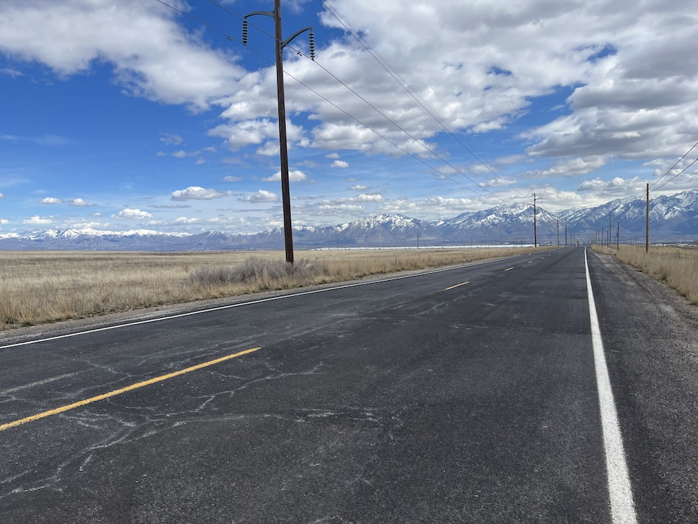

What a Ride
After the surgery, my cardiologist said, "Well, I've done the easy part." Sure - genetics had something to do with my condition, but my weight played a heavier role, you could say. So, I began to eat less, then I did what any obese person does: I put on spandex and got on a bike.

I wasn't fast (nor am I now). I ride many of the same routes repeatedly. I've never asked a professional how I should adjust my bike for better performance. I can't do most basic maintenance on my bike, nor name most of the parts, for that matter. I have no clue what the "right" way is to eat/drink while riding. I own the cheapest cycling shoes I could find. Last month I put the first electronics on my bike. I've ridden with another person exactly once. One time, while standing next to my bike, with one foot still clipped in, I fell over, cutting my knee and breaking spokes in my flailing. But I've kept riding. Here we are - a little less than a year (but 2500+ miles) after my first ride, I've lost more weight than I deserve. My old cycling kits no longer fit (along with so much else). My cardiologist said he didn't have a diploma for me, but "there will be music playing for you as you walk out" and that he never needed to see me again. In the colder weather I sit on my bike in my cold garage, listening to books, adding more miles, waiting until it warms up outside.
I tried to sign up for a local (metric) century, and they thought it was such a bad idea for me that they cancelled the ride. But I'll sign up for something else and be intimidated by it. Still, I anticipate I'll get on my bike that morning, like I have so many others, and just... ride. You can, too.
- Prior: Blogging, Again